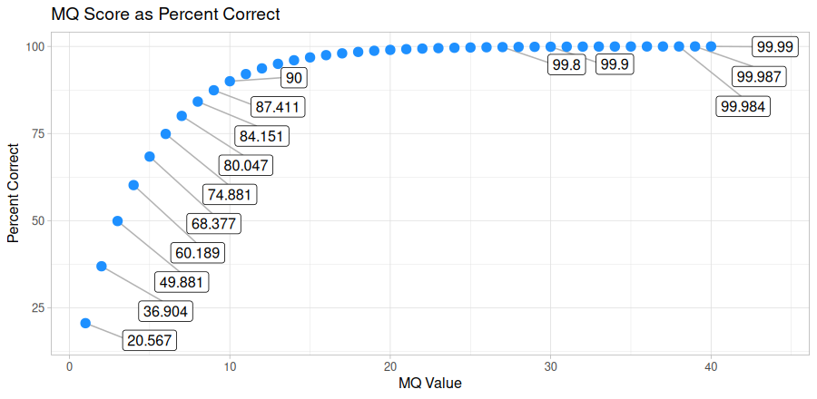
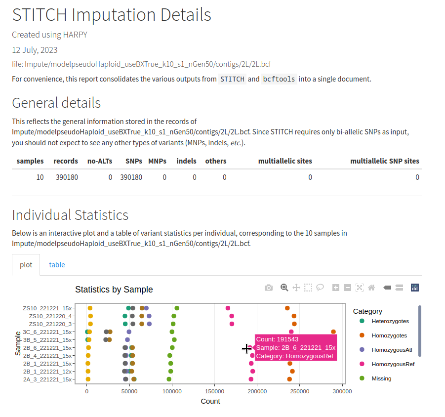
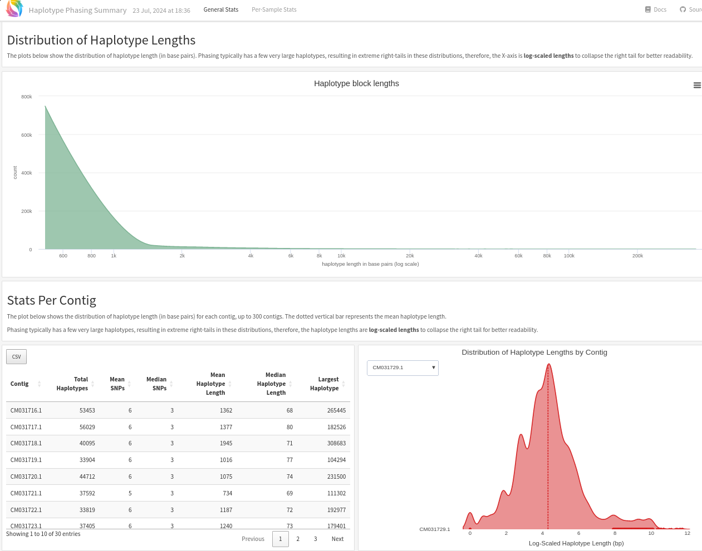
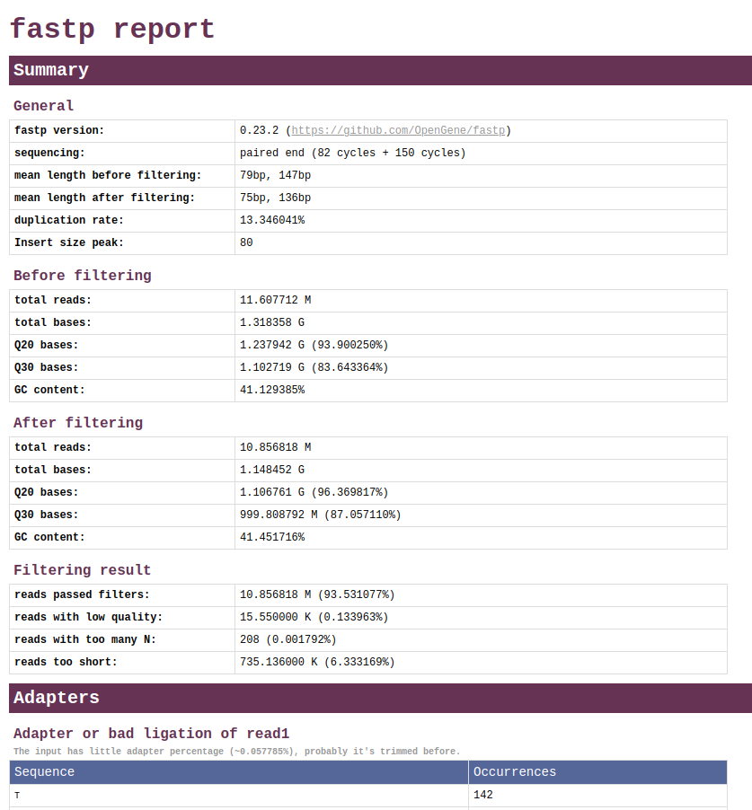
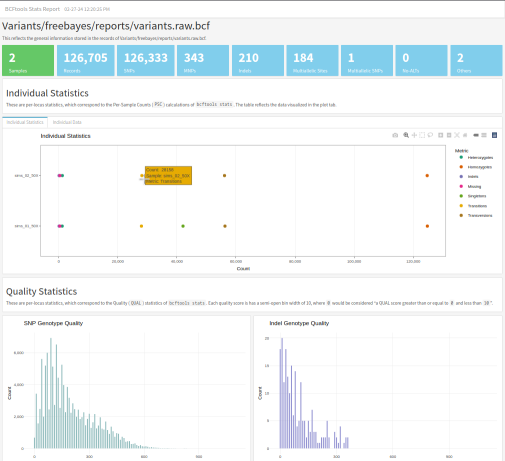

#
Tag: wgs
See all tags.

linked-read • wgs
Map Reads onto a genome with BWA MEM
Align haplotagged sequences with BWA MEM
linked-read • wgs
Map Reads onto a genome with strobealign
Align haplotagged sequences with strobealign

linked-read • wgs
Impute Genotypes using Sequences
Impute genotypes for haplotagged data with Harpy

linked-read • wgs
Phase SNPs into Haplotypes
Phase haplotypes for haplotagged data with Harpy

linked-read • wgs
Quality Trim Sequences
Quality trim haplotagged sequences with Harpy
linked-read • wgs
Simulate Genomic Variants
Simulate snps, indels, inversions, cnv, translocations

linked-read • wgs
Call SNPs and small indels
Call SNPs and small indels